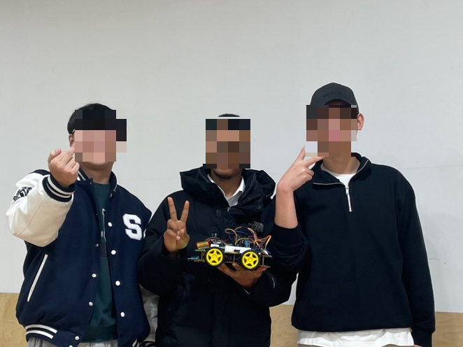
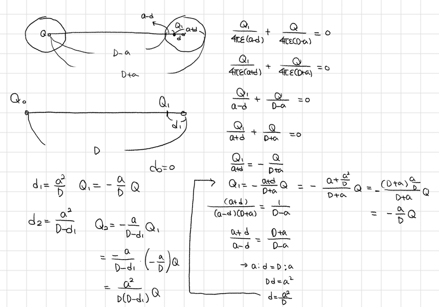
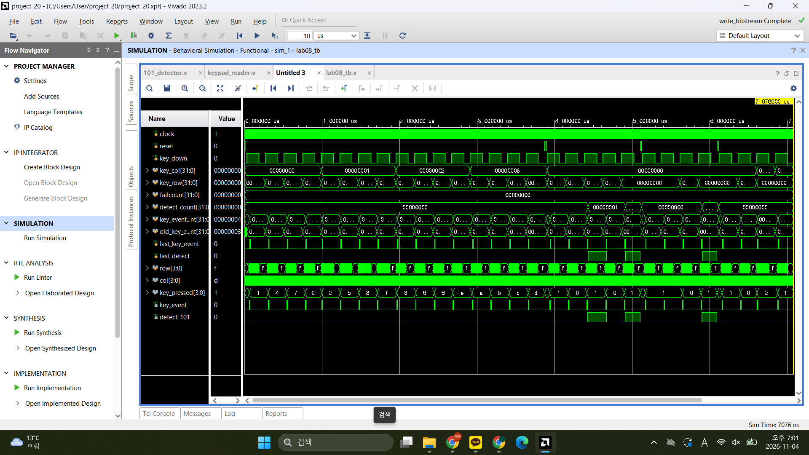
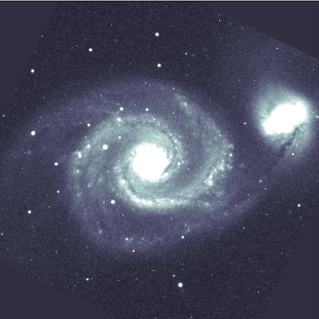

01 — CONTROL / SIMULATIONIN PROGRESS

Balancing Robot
기울어지는 몸체를 다시 세우는 밸런싱 로봇. 모델과 제어 원리를 시뮬레이션으로 익히며 제작 과정을 기록하고 있어요.
회로와 코드로 움직이는 것을 만드는 중. 전자공학을 공부하며 임베디드와 로봇의 세계를 하나씩 탐험하고 있어요.

안녕하세요. 전자공학을 공부하면서 하드웨어와 소프트웨어가 만나는 지점에 관심을 두고 있어요.
직접 회로를 이해하고, 코드를 짜고, 움직임을 눈으로 확인하는 과정이 좋습니다. 아직은 배우는 중이지만 작은 아이디어를 작동하는 결과물로 바꾸는 기록을 이곳에 쌓아갈게요.

기울어지는 몸체를 다시 세우는 밸런싱 로봇. 모델과 제어 원리를 시뮬레이션으로 익히며 제작 과정을 기록하고 있어요.

상태 머신과 디지털 회로를 공부하고, 설계한 동작이 실제 파형에서 어떻게 보이는지 확인합니다.

M51 나선팔 왜곡 분석 코드
* 프로젝트 설명과 상태는 실제 진행 상황에 맞게 계속 업데이트할 수 있어요.
회로와 논리를 탄탄하게 이해하고, 풀이와 설계 과정을 정리합니다.
센서와 제어가 실제 움직임으로 이어지는 과정을 연습하고 있어요.
완벽해질 때까지 숨기기보다, 배우는 과정을 차근차근 기록합니다.